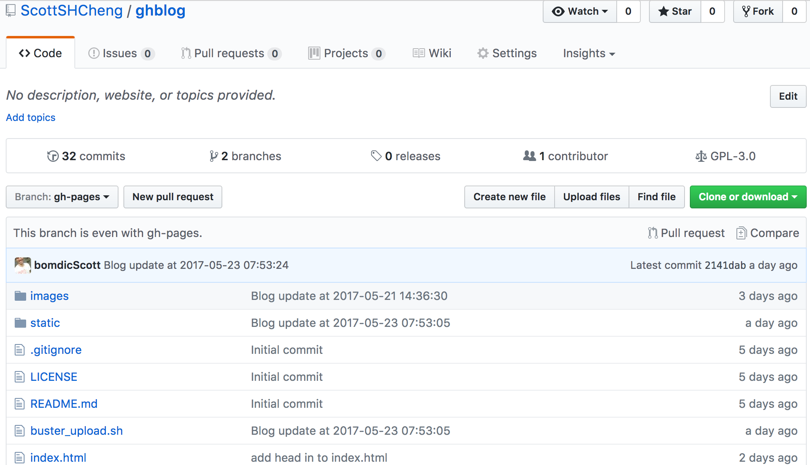
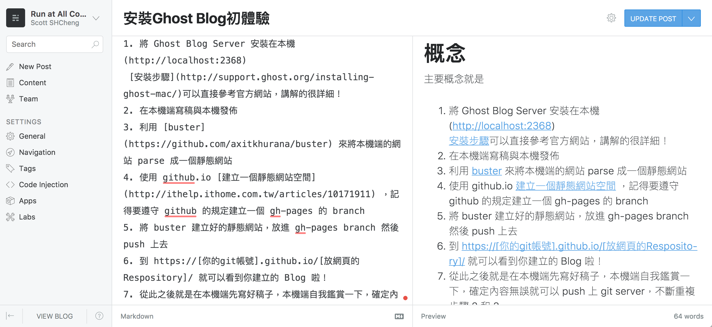
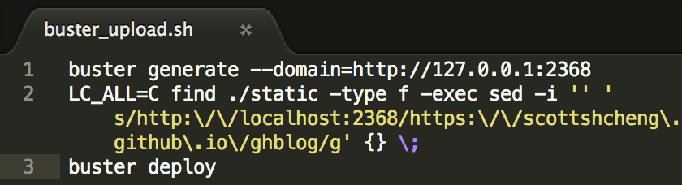

人生已經過了三分之一，想要開始寫些東西，把生活中有趣的事情都記錄下來。
第一步想到的應該就是架一個Blog...但對於網站架設，後台管理都只懂些皮毛。無意中看到 使用GitHub當靜態化Blog，原來可以把ghost blog做成靜態網站，再把github作為免費空間放置blog，這也太方便(而且省錢 XD)，參考連結已經把步驟講解的很詳細了，再補充一些自己的理解。
參考來源
流程
主要概念就是
使用 github.io 建立一個靜態網站空間 ，記得要遵守 github 的規定建立一個 gh-pages 的 branch 
將 Ghost Blog Server 安裝在本機(localhost:2368)
安裝步驟可以直接參考官方網站，講解的很詳細！在本機端寫稿與本機發佈
利用 buster 來將本機端的網站 parse 成一個靜態網站
將 buster 建立好的靜態網站，放進 gh-pages branch 然後 push 上去  其中第二個 find + sed 指令是為了將local 網域修改成 github 上面的域名。其實好像可以透過 ghost blog 中 config.js / url 的設定修改，但不太會用，就用暴力法處理 XD
到 https://[你的git帳號].github.io/[放網頁的Respository]/ 就可以看到你建立的 Blog 啦！
從此之後就是在本機端先寫好稿子，本機端自我鑑賞一下，確定內容無誤就可以 push 上 git server，不斷重複步驟 3 到 6
補充
- Ghost Blog 也有很多 Theme 可以直接套用
- 好用的 Cloudtag 可以參考 幫Ghost Blog備份/升級/新增標籤雲功能來增加！
注意：連結中有一行 tag_cloud = function (options) 要修正成 tags_cloudtag = function (options)才不會出現 error，應該是原作者筆誤
後記
透過整個安裝流程才學習到 node.js / html / css / scss 之間的互動 (當然也是理解皮毛而已)，也算是額外的收穫。改天再來自己多改改 source code 應該可以學到更多:)